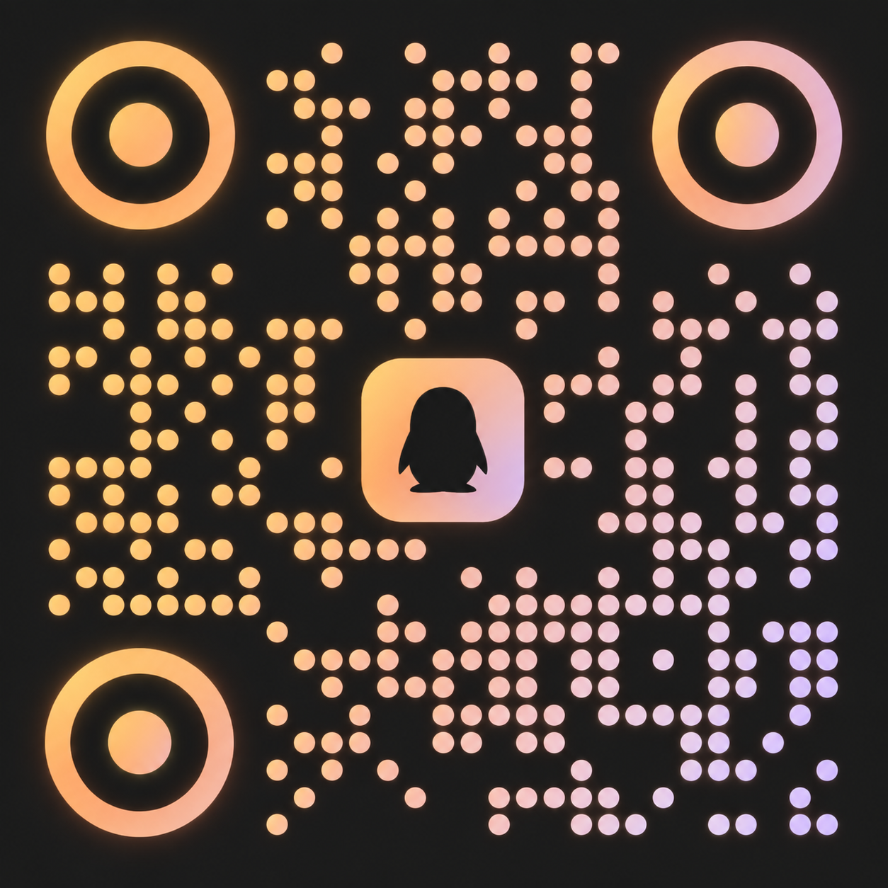

系统学习
从基础理论入门，建立清晰的概念框架。按顺序读；读不懂的地方不跳过，它们通常最值得停下来。
JUEXIN PSYCHOANALYTIC SOCIETY
温州医科大学 · 精神医学院
有些经验很难直接说清：反复出现的关系、还没有名字的感受。
精神分析提供一套读法，觉心提供一张不必独自坐的桌子。
首学期从基础理论入门：每月一次共读，一次研讨。
觉心精神分析协会是温州医科大学精神医学院的学生学术社团，面向基础理论与跨学科交流。
成立的理由很朴素：把零散的兴趣，变成共同的学习。我们从一个概念、一段文本，或一个还没成形的问题出发，读、讨论、再读；不急着给结论，先把问题问准确。
协会已正式成立，面向温州医科大学及温州医科大学仁济学院全体学生开放。没读过弗洛伊德，也可以从第一次共读开始。
从基础理论入门，建立清晰的概念框架。按顺序读；读不懂的地方不跳过，它们通常最值得停下来。
读书会与研讨班交替进行，让阅读有回应。同一个概念，各自的读法往往不同；把理由讲清楚，比达成一致更要紧。
精神医学、心理学与人文社科在同一个词上常常不同义。我们保留这种差异，先弄清彼此说的是哪一层意思。
这些不是活动现场照片，而是意象图。围坐、倾听、往下问，是我们在共读里反复练习的三件事。
拖动或横向滑动 ↔THREE WAYS IN
下面三个问题，是成立时最先要回答的三个。答案都不长，但都落在了活动安排上。
精神分析的概念不好啃，入门常常卡在第一步。我们按主题排顺序：先用一本读得完的书把基本概念读准，再回到案例与临床材料。读不懂的地方，正好是讨论的起点。
不要求提前读过弗洛伊德。首学期的主线是精神分析基础理论入门。
频率提前定好：不必每次重新约时间，也不会因为错过一次就接不上。
每次一个主题，由成员轮值主持。材料与问题提前发出，到场先把各自的读法讲一遍，再讨论分歧。散场时带走的是更准确的问题，而不是标准答案。
主题梳理 / 轮值主持 / 观点交锋
共读一本基础著作，一次读一段。先弄清一个概念在这一段里的用法，再对回自己的经验。读不下去的地方不必跳过，它通常最值得停下来。
逐段共读 / 概念梳理 / 笔记互换
由指导教师张燎领读专题，把基础理论与临床、研究中的具体问题接上。讲座后留出提问时间，问题可以不成熟。
教师领读 / 专题分享 / 现场提问
以上为首学期规划。时间与地点确定后在 QQ 群公告；频率不变，具体日期以群通知为准。
WHAT WE DID FIRST
社团成立之前，我们先做了一轮实验训练：围绕精神分析的核心主题完成专题讨论与实训，由张燎老师指导。有成员在复盘里写道：精神分析的学习不是对概念的机械记忆，而是在理论、案例与现实经验之间不断建立联系。这也是我们决定把它长期做下去的原因。
成员轮值主持
专题实训
参与前期筹备
「我从单纯的学习者，逐渐转向一个讨论的组织者和引导者。」参与成员心得 · 上学期项目实践课程记录
活动由成员自己组织，
专业内容由指导教师把关。
指导教师
温州医科大学精神医学院讲师
精神分析学博士，哈佛大学医学院博士后。研究方向是失眠、焦虑、抑郁等身心健康问题，以及精神医学的技术产品转化。
发起人
精神医学院 2024 级本科生
论文成果 4 篇（2 篇一作或共一，含 1 篇 Nature 子刊），参与房树人智能解读分析系统的开发；长期阅读精神分析经典，也是社团日常组织的负责人。
BETWEEN MEETINGS
线上学习空间现有 183 条精神分析词典条目，附英语、法语、德语译名对照；课件、公告与学习记录也归档在这里。如果链接打不开，可在 QQ 群询问最新地址。
进入线上学习空间 ↗THERE IS A CHAIR FOR YOU
面向温州医科大学及
温州医科大学仁济学院全体学生开放。
扫码或搜索群号加入 QQ 群，
活动通知、材料与临时变更都在群里发布。
